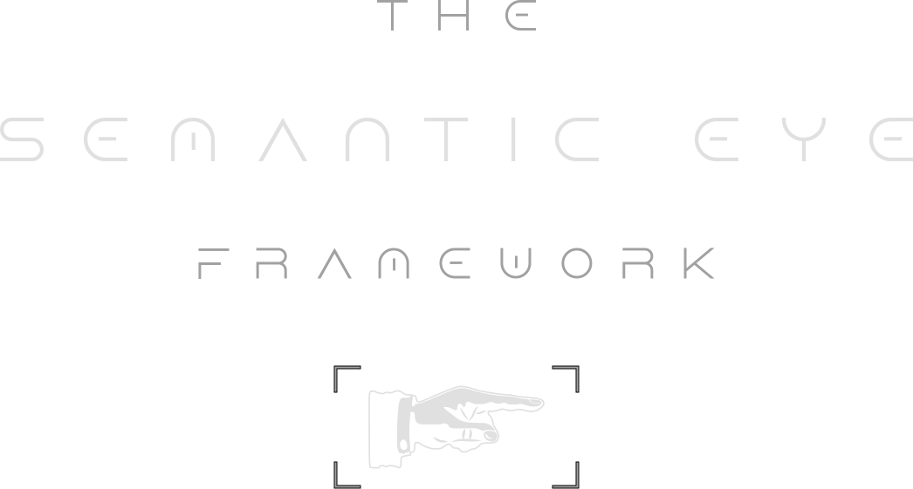

Introducing …

The Engineering Toolbox for effective Design, Evolution and Digitalisation
of your Organisation and its Processes.
At a Glance
Organisations need digital transformations to ensure and improve their productivity, quality and innovation.
Only: Digital transformation is a high-risk endeavor as is sadly evidenced by many failing projects.
Different Organisations, Different Risks
Each organisation is different, however, two typical digitalisation scenarios have emerged over time.
1. Established, Standardized Field
Organisations that are active in well-understood subject areas and that rely on industry-standard processes can significantly reduce risks by adopting proven digital solutions that require no or few adaptations.
The organisation will mostly adopt the out-of-the box modules and processes as provided by that solution;
the new solution is branded and customised through configuration rather than full-on software development.
2. Non-Standard Business
Organisations with non-standard subject areas or processes have particularly high digitalisation risks.
They face two main options both of which create a strong dependency on the technology partner.
a. Adopting standard, commercial software solution that needs significant adaptation to their needs by a technology partner:
The organisation must adapt to the standards of the solution as much as possible; the domain experts will need to make meaningful sacrifices.
This requires a thorough understanding of that solution, its out-of-the-box processes, capabilities and limitations prior to any actual transformation steps. The technology partner will emphasise the strengths of their solution and the supposed ease of the transformation. Organisations cannot count on the technology partner acquiring a deep understanding neither of its subject areas nor its business processes nor any particular qualities or idiosynchrasies of «doing business».
b. A custom software solution for which the technology partner will use proven software components or platforms, however:
A greenfield program led by the technology partner in which the organisation's domain experts will arguably face the greatest challenge of their lives.
While this offers the organisation the opportunity to distinguish itself from the market and from competitors in terms of productivity, quality and innovation, this postential comes at great risks. Organisations that so far relied on smart humans and mostly-manual processes always underestimate the complexity that they are managing day in and day out. It is only because of their skilled and experienced people that they are able to handle that complexity. Such organisations must not count on the technology partner to provide useful support in coming to terms with their complexity, which will be augmented by the complexity of the new strategy, new requirements, future technologies, the changes in roles, responsibilites and organisation, etc.
The predominant digitalisation strategy of these organisations is to cast out their nets in hope of finding a technology partner that «runs» the digital-transformation show for them.
Overconfident technology partners are happy to take on that challenge even if they neither have the experience nor the experts to first explore and then master the organisation's «business» — and particularly their «way of doing business». Instead, they are more than likely to seek remedy on the technology side and to focus on that.
Failure is then a matter of time.
Can this be avoided?
We need to change the narrative in order to contain the great threat and risks
that a digital transformations create for organisations:
Organisations must take full responsibility and leadership of their own digital transformation
— instead of trying to offload it to technology partners and hope for the best.
But how should they do that?
The Semantic Eye Framework was specifically created to fill the abyss
that is opening when organisations decide to take fate into their own hands.
The Semantic Eye Framework in a Nutshell
The Semantic Eye Framework digitalises the digital transformation of organisations 😉
The Semantic Eye Whitepaper
The Semantic Eye Framework
- empowers organisations as the source, the target and the driver of their own digital transformation;
- reduces dependencies on IT suppliers by relying on new, impactful methods, tools and processes;
- makes organisational processes and digital transformation a successful and satisfying endeavour.